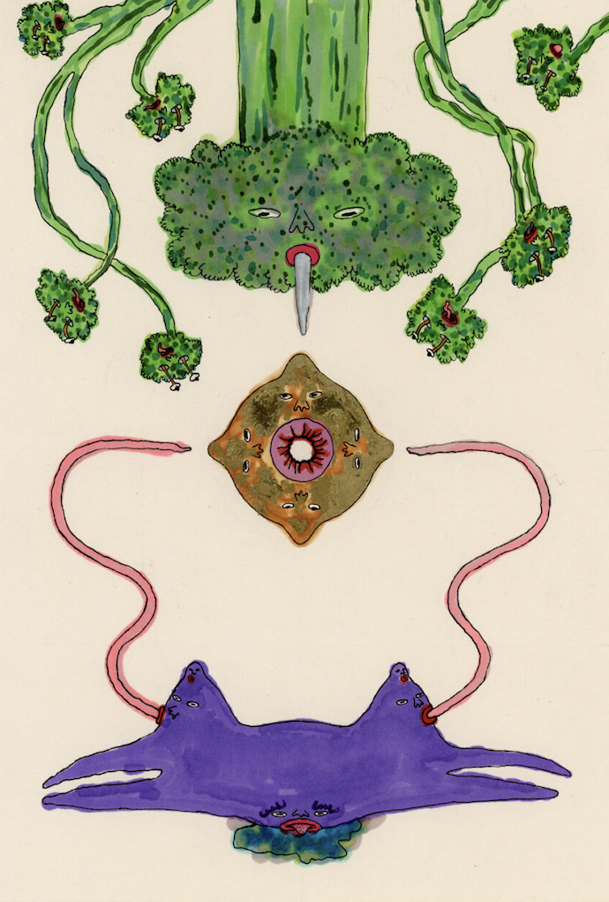
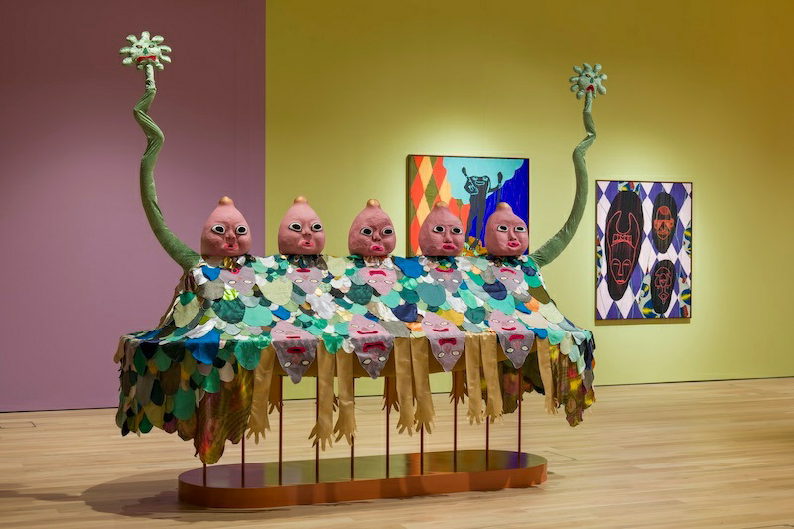

The immigrant experience of flux and resilience underpins
Rae-Yen Song's practice.
Their ever-evolving exercise in world-building is informed by East/South-East Asian ancestral mythology, Daoism,
diasporic-futurism, family ritual, more-than-human politics, and science fact-fiction. In 2024, Song collated a research exhibition and live program,
soooooooooooooooooot, at CCA Glasgow, exploring the ideas that will shape a major solo exhibition at Tramway,
Glasgow, in late 2025.
Interview
Visual artist Rae-Yen Song discusses art as another language, staying excited,
and how they honor their ancestors by leaning into the abstraction of oral histories to build material worlds.
You've spoken about how being an immigrant within the diaspora informs your practice. I'd love to hear more from
you on that?
That's my driving force; thinking about the immigrant as a basis of wisdom and resilience; the idea of otherness,
and the foreigner being an outsider, or not belonging. But, those being advantageous, or powerful, because of
growing in hostile environments and being able to thrive in them as well.
Like a dandelion.
Exactly. Yeah. I think a lot about Vilem Flusser Flusser's book, called the
Vampyroteuthis Infernalis.
Vilem Flusser as a philosopher and media critic, thinks of the migrant as this vanguard for the future, and the migrant
being of multiple lands rather than just one. He argues that you can only be a philosopher if you know more than
one language because you think from within multiple realms rather than one.
Unfortunately, much to my great shame, I actually only speak the one language, English, but then I think of art
as another language. I pursue this idea of world building as a non-linear, non-linguistic visual language that
goes beyond ideas of conventional or formal human language, but more of a non-human language.
It revolves heavily around my ideas of family and ancestry, ways of existing, ideas of belonging and not
belonging. Particularly thinking about me growing up in Scotland against this white background...not belonging.

may-may songuu, ink and my father's marker pens on my father's paper
(part of a series of six drawings),210 x 297mm / 210 x 420mm. 2020"
I was asked by my best friend's mum recently, they're Kurds-because my family are Jamaican immigrants-she was
asking me, if I feel more connected to being Jamaican over being British? The question was interesting because I
wasn't born in Jamaica, I have a secondary experience of that culture because it's still funneled through a
navigation of British culture as well. So there is this mesh almost, where with my family, all I've ever known is
being Caribbean in this context, so I couldn't apply it to being Caribbean in the Caribbean.
Exactly. That's my thinking as well; being more in relation with the diaspora. And for me, not even the diaspora
of just East, Southeast Asian, but a diaspora in Britain.
I was sent to Chinese school as a kid-I didn't have the words for it at the time, but on reflection, there's this
community, where [you're supposed to] belong. But in actual fact, I didn't.
Why?
Because there were families in that Chinese community who were much more Chinese than me... they grew up speaking
Cantonese or Mandarin at home. I grew up speaking English. A lot of the kids grew up in a much tighter community
of aunts and uncles and extended family who were in Scotland as well. But for me, it was just me and my immediate
family, and we grew up speaking English.
It was like rubbing salt in the wound. At both schools-Chinese school and Western school-I would play up, I'd be
cheeky and disruptive and try to get other kids to join me. This is pop psychology, but this was probably me
trying to hide. I think back to it and I wonder, "Oh, maybe that's the basis of my whole art practice."
Really? How so?
More recently...reading about trickster characters and how disruption can be used to create your own space. That
extends into realms of world building, and thinking around family fables, mythologies, and ancestry, and how I can
tell different life stories.
I want to speak about that actually, and how Daoism connects you to your ancestry, it's link to the cosmic energy
of Yin and Yang-Yin's association with darkness, cold, wetness and the moon, and Yang's association with light,
fire, east and the dragon. How do you package all of that in your work?
My ancestors had a Daoist practice and my introduction to it was going to see family in Singapore. Just the great
reverence to ancestors. You enter the home, you light your joss sticks, you do a prayer, and then you go into the
temples. Then you visit the ashes of ancestors and you're doing your prayer as well. It was this constant
understanding that the ancestors are present, they're like lively ghosts. It's about still caring for them
essentially. Bringing Daoism into my thinking process and for myself...I got into the more philosophical side
through my dad. He had all these different books, like the Tao of Physics, the I Ching, lots of things around
Daoism and Buddhism and the ideas of the subconscious, and then Carl Jung, of course...ideas of psychedelia,
hippies, and then also video gaming.
I guess you could apply that word to your work actually, because to me, it's kind of psychedelic. There are forms
that are recognizable, then they merge into others that aren't. A flubbery movement...I really love that.
Oh, thanks [laughs] What you reference are my ideas around abstraction, because everything that I know of my
ancestry, my family, and my heritage, is also fragmented, so it's not this verbatim retelling. I'm not interested
in just a retelling of history, I'm more interested in the gaps, how you can fabulate them, and how I can use it
as an opportunity to get closer to my ancestors or their stories...filling it in.
Being the trickster.
Yeah, being the trickster. [laughs]
Rae-Yen Song , 2021, installation
(inflatables, costume, glazed ceramics, geodesic textiles,
statue, animation,bronze, laser-etched perspex and woodblock, soundscape), 16m x 10m x 4.5m"
So you're giving a myth or oral history a physical vessel or space. I'm reading that more so as preservation and
conservation of these stories meshed with your experience and how you interpret the gaps...what's missing in the
story becomes your work.
Yeah, it is this constellation...what you just said about preservation, I do think about ideas of the archive and
records. Do you know that book, Wayward Lives, Beautiful Experiments?
Yeah.
So incredible, and the writer is who again? Oh god, I'm so bad at remembering...Saidiya Hartman. She coined the
term...
Critical Fabulation.
Yes, exactly, where she has these documents that have extreme negativity, often in relation to incarceration. But
then there's such creative joy and beauty in what she does in terms of digging into and fabulating the gaps...the
things that aren't recorded or that exist either orally or through the imagination...there's energy. That goes back
to this idea of immigrant cultures and the other, their histories aren't recorded. So i'm thinking "Okay, how do
I want to tell these stories?, how do I want to record them? and who am I recording it for as well?" I don't want
to just make work and then it's being presented to this white gaze.
Yeah, definitely.
Which ultimately the art world is. It's essentially built on the foundations of...It is within the institutions of
colonialism and the white gaze. So I'm always thinking about who is my audience?
Your ancestors?
My ancestors, exactly! Lively ghosts, energies that are still present. Then this idea of, "Okay, if I'm telling
your story and you're still present, how am I telling this? Because I don't want to put words in your mouth..." So
maybe it's more about getting closer to them, a dance.
There's reverence, and you're right, this dance. In Daoism, some of the main pillars are compassion, moderation
and humility, and from that, I think you land on mutualism.
Yeah, exactly!
In terms of landing on mutualism, which for me and how I read your work as well...there's such a big naturecentered
and nature-focused element. Do you feel that it's an urgent thing to push in terms of the climate
crisis; how we should be relying on nature and the learnings from nature, a mutual relationship? What's really
interesting is how you foreground our own animality. Like, "Okay, we're all animals. Nobody is better than
anybody here." I sometimes can't detect where a monkey begins or a human ends in some of your work. What informs
those decisions for you, and do you feel that it's important for you to push that?
Definitely. Definitely. With Daoism, the ultimate aim is to truly perceive the mutual interrelation of all
things, like the sharing of atoms, water, we're just entwined. How can we not be? That sense of the isolated
individual, the human, is a total construct which could dissolve upon the identification of a greater unity. That
definitely falls into dialogues around the climate crisis and ways of thinking around how we live in this
increasingly hostile world. Thinking about us as nature, rather than being with nature, we are nature. It is us.
If we think of nature as ourselves, then how can we care for ourselves?
Then learning from the wisdoms of other non-linguistic beings. It's not just earthly, Daoism revolves around the
ideas of the cosmos and beyond. The unknown and the abyssal powers that we can't even comprehend, but we are a
part of. We're minute but we're still so destructive. We've distanced ourselves so that we don't feel entwined,
we don't feel those vibrations, which I think so many other organisms and other non-human beings fundamentally and
powerfully feel. We've lost that.
Absolutely.
Maybe art is, for me, an attempt to try and get closer to those vibrations, to have a bodily embrace with it and
feel ourselves as nature, and therefore care for it.

Rae-Yen Song - song dynasty, 2021, sculptural costume
(inherited fabrics; papier-mache; harness), 280 x 300 x 140cm
So you're thinking on multiple planes here; the non-human that is physically here, the non-human that doesn't
have a body anymore but is ancestral-lively ghosts, and then us as physical beings. Your work for me is trying to
re-engage and reconnect. In essence saying, "We're all soft, we're all pathetic, we're all funny sometimes. We
cuddle and roar, we're animal cousins and we're spiritual cousins, and this is what I think it looks like."
[Laughs] Yes! With the idea of lively ghosts and life and death cycles, the circularity of things...specifically in
relation to the death of many of my own ancestors. I'm imagining their decomposition giving breath to so many
other organisms, creating other worlds.
I'm influenced by the origin story of "Pangu and the cosmic egg" in Chinese mythology. It is said that Pangu
awoke in darkness, and he pushed and separated the Yin and Yang from each other. And over centuries, he used all
his might to hold these two apart until he was reassured that they were separated. His body was so tired and
fatigued that he fell and he died, but in doing that, his body became the world as we know it. His breath
becoming the air, his voice becoming thunder, his eyes becoming the sun and the moon, and his limbs becoming
mountains and his blood becoming the rivers and seas.
Wow.
I've thought a lot about these age-old mythologies, and brought that into my own ancestry, my own kind of
familial stories. If my ancestors are being decomposed and are nourishment for other creatures and other beings,
wouldn't those other beings then also be my kin and part of my ancestry? I'm beginning to think of ancestry in a
much broader sense now-the non-human as extended kin. How that can bring about more empathy and care towards
nature in a familial sense?
Do you think that that is why you have such a dynamic practice? Because wow...ceramics, gaming, animations,
drawings, prints, sculptures, it goes on and on and on. And you still have this ability to make the work ooze
you, which can be hard to do when you are working across so many different mediums, but you do it so slickly.
It's incredible. What makes you choose a medium?
I choose the medium between curiosity, total ignorance, naivety and things that are tactile, things that are in
the realms of craft. I don't really see a difference between art and craft really. I know people try to separate,
but I think to make something exist, I really indulge in the craft of it. I guess that's why I fell into ceramics,
textiles, drawing, and then building more architectural structures. It's about crafting and finding beauty in it.
Not in a conventional sense, but beauty in that, time and care has really been put into a material, and you've
given your energy to this matter...you've imbued it with your warmth. You've heated it up with your hands and
you're giving it life.
How did you grow in confidence using so many different materials?
I have just an eagerness to make. I love making things, I love playing with material, and I get deep satisfaction
from building things, I always have. It's almost like this effortless strength and intuitiveness that I really
find a lot of joy in.
Is there a favorite material or media?
Ooh. It's like children. I've only recently gotten into it, but I do really enjoy using ceramics. I was talking
to an academic, Mi Yu, and we were talking about how ceramics really encompasses all five phases of the "wuxing"
in Daoism: fire, water, earth, wood, and metal. Through its processes, it goes through all of those phases. It's
a real kind of energy bound material...matter. Ceramics for me holds ideas of multi-functionality.
Your ceramics are wow. If you're saying that you've just gotten into it, they're very ambitious.
Almost stupidly. [laughs]
[laughs] Is there anything super key that you've learned from moving across all these mediums? Working with a lot
of different craftspeople in different studios? Cross-discipline collaboration? Is there anything key that you
would tell other artists that want to do the same?
Be excited. I think my excitement alongside my curiousness and naivety has gone a long way. I think if you're
excited and you approach someone, and you know that they...For instance, right now, I want to talk to someone about
sea worms, so I'm looking into marine biologists. And the way I approach it is like, "I am really excited to talk
about sea worms and I know you love sea worms."
[laughs]
It's like making a friend in the playground: "I love what you do and I want to play with this as well." Being
excited I think has genuinely got me along. Where I like playing with things, I like to play with other people,
too.

.png "Rae-Yen Song , 2021, installation, 16m x 10m x 4.5m")